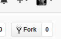
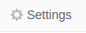
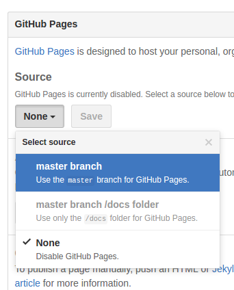
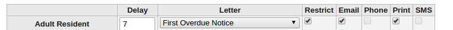
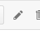

Many of our partner libraries want to send printed notices to borrowers who have not supplied email addresses. The most obvious solution is to print the text sent in the emails generated by overdue_notices.pl. This has some drawbacks however -- there are no page breaks between notices, and the notices themselves may not be formatted as you want them to be.
In this blog post, we will cover how to add page breaks, as well as how to print the borrower's postal address in a location on the printed page that will show in the window of a standard #10 envelope.
Here are the steps that you need to take:
NoticeCSS system preferrence to point to your style sheetprint under Overdue Notice Triggers for the notices that you want to printgather_print_notices.pl cron jobThe gather_print_notices.pl cron job will generate and email an HTML attachment which is styled using the CSS in step 1. When you view that attachment in your web browser, you will see that individual notices show, (and can be printed on their own page). Furthermmore, because the CSS is not in the notice itself, you will be able to make changes to the styling without generating new notices.
The styling of html pages is handled by 'Cascading Style Sheets', aka CSS. In this case, we will be creating CSS files that will be hosted outside of Koha's web server. There are various ways to create and host CSS files. Github provides good versioning, sharing and hosting, so that's what we'll use here.
If you do not already have a github account, go to https://github.com/ and click the green 'Sign up' button. Write down your username; you will need it later in this article.
bywatersolutions/kohacss archive.We have created an existing CSS file which contains code to paginate the notices and add the address window. You will need your own copy of this file that you can edit to fit printer margins, and/or style as you see fit.
Go to https://github.com/bywatersolutions/kohacss
Click on the 'Fork' button on the upper right hand side of the page:
"Fork your own copy of bywatersolutions/kohacss to your account"
This will 'fork' or copy the bywatersolutions/kohacss repository into your own account.
Click the Settings link:
github settings link
Scroll down to GitHub Pages and change Source from 'None' to 'Master Branch', then click save.
Change to master branch
The file is then available at https://<<YOUR USER NAME>>.github.io/kohacss/<<PATH TO CSS FILE>>
For instance, the github user bartonski has made the file NoticeCSS/envelope_window.css available at
https://bartonski.github.io/kohacss/NoticeCSS/envelope_window.css
NoticeCSS system preferrence.In Koha, Go to Home > Administration > System preferences, and click on the Circulation tab. Scroll down to NoticeCSS, and enter https://<<YOUR GITHUB USERNAME>>.github.io/kohacss/NoticeCSS/envelope_window.css. Save the system preference.
Go to Home > Tools > Notices and Slips. Click 'Edit' on one of the overdue notices, and then click the 'Print' section.
Make sure that 'HTML message' is checked. Fill in the Message Subject. IN the body, you will want to create two HTML 'div' sections. One will have class="address", and will contain your address block. The other will have class="content", and will contain the remainder of the notice.
Here's an example:
<div class="address">
<<borrowers.firstname>> <<borrowers.surname>>
<<borrowers.address>>
<<borrowers.address2>>
<<borrowers.city>>, <<borrowers.state>> <<borrowers.zipcode>>
</div>
<div class="content">
<<today>>
Dear <<borrowers.firstname>> <<borrowers.surname>>,
According to our current records, you have item(s) that is/are overdue. Please return item(s) as soon as possible. You will be unable to use your library card until the item(s) is/are returned and the fines are paid..
The following item(s) is/are currently overdue:
<item>"<<biblio.title>>" by <<biblio.author>>, <<items.itemcallnumber>>, Barcode: <<items.barcode>>, Due Date: <<issues.date_due>></item>
If you have questions regarding this notice, please call the Alturas main library at 530-233-6340. Thank-you for your prompt attention to this matter.
<<branches.branchname>> Staff
<<branches.branchaddress1>>
<<branches.branchcity>>,<<branches.branchstate>><<branches.branchzip>>
Phone: <<branches.branchphone>>
Email: <<branches.branchemail>>
</div>You will want to replicate this process for all of your overdue notices, adding <div class="address">..</div> and <div class="content">..</div> in each print notice.
print under Overdue Notice Triggers for noticesGo to Home > Tools > Notice triggers, and click the checkbox under Print for any notices that have Email checked.
Overdue triggers
gather_print_notices.pl cron job[ Note: this step is handled by Bywater Solutions staff ]
Configuration of gather_print_notices.pl is beyond the scope of this blog post. The script path is misc/cronjobs/gather_print_notices.pl. A list of command line options can be foud by running misc/cronjobs/gather_print_notices.pl -h.
Once the notices have been generated by overdue_notices.pl, gather_print_notices.pl can be run manually, to produe an HTML file that you can use to complete the set-up of envelope_window.css.
Alternatively, we've created a sample notice under the notice_css repository to test envelope_window.css. You can reach it at
https://<<YOUR USER NAME>>.github.io/kohacss/Example/envelope_window.htmlenvelope_window.cssYou can edit the CSS file by navigating back to the kohacss directory in your github account, then clicking on the NoticeCss directory, then on envelope_window.css. From there, you can click on the edit icon, which looks like a pencil:
"Edit this file"
You may need to edit the top and left attributes of div.address:
div.address {
position: relative;
border 0px;
padding 0px;
margin 0px;
top: 1.25in;
left: 0.875in;
width: 4.5in;
height: 1.125in;
}Increasing the value of top will move the address down the page.
Increasing the value of left will move the address toward the right on the page.
Once the address is properly placed on the page, you may also need to adjust the top and right values of div.content.
You may need to print the notice several times before you get the address window and the content correctly placed.